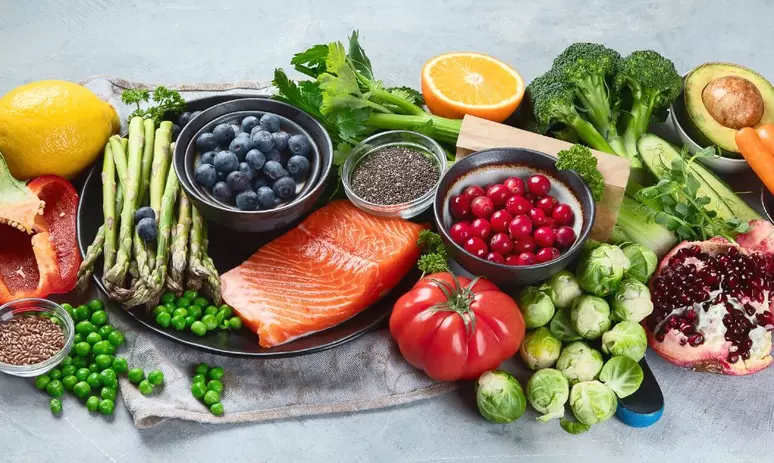

Visando a manutenção de peso saudável e a prevenção de obesidade, doenças cardiovasculares, diabetes tipo 2 e osteoporose, recomendamos:
- 01. Consuma alimentos variados, em 4 refeições ao dia. Pular refeições não emagrece e prejudica a saúde;
- 02. Mantenha um peso saudável e evite ganhar peso após os 20 anos. Evite também o aumento da cintura;
- 03. Faça atividade física todos os dias. Inclua na sua rotina andar a pé, subir escada, jogar bola, dançar, passear e outras atividades;
- 04. Coma arroz e feijão todos os dias acompanhados de legumes e vegetais folhosos;
- 05. Coma 4 a 5 porções de frutas, todos os dias, na forma natural;
- 06. Reduza o açúcar. Evite tomar refrigerantes;
- 07. Para lanches coma frutas ao invés de biscoitos, bolos e salgadinhos;
- 08. Coma pouco sal. Evite alimentos enlatados e produtos como salame, mortadela e presunto, que contêm muito sal. Evite adicionar sal à comida já preparada. Aumente o uso de alho, salsinha e cebolinha. Alimentos ingeridos na sua forma natural como feijão, arroz, frutas, grãos e verduras têm pouquíssimo sal;
- 09. Use óleos e azeite no preparo de bolos, tortas e refeições;
- 10. Tome leite e coma produtos lácteos com baixo teor de gordura, pelo menos 3 vezes por dia .